Previous: Tutorial 103: Scoring and UI
By Yibei He & Peter Brinson
0. Introduction
A. Outcome
In this tutorial, you will build a haunted house in first-person. Each chapter constructs a different type of trigger blueprint—actors that fire logic when a player enters a space. By repeating the “overlap-and-cast” pattern across lights, doors, animations, and sound, you will master the fundamentals of level interactivity.
Sample outcome: Video
B. Chapters
C. Learning Objectives
Review from earlier tutorials:
OnComponentBeginOverlap- Cast to character BP
- Variables (
Instance Editable,Expose on Spawn)- Timeline +
LerpNew:
- First Person template
Arrayvariables +For Each LoopFunctions- Bool “trigger once” pattern
Set Relative RotationSoundvariable (Ambient Sound, spatial audio)- Mixamo character import and setup
CharacterBlueprint (parent class)Play Animation/SetTimerByEvent- Parent static mesh as rotation axis
Custom Event+ recursion (staggered timing)- Functions (atomic operations) vs Event Graph (time-based orchestration)
1. Create a First Person Project
Project Haunted House
Create a new project using the First Person template. Choose Blueprint (not C++). Setting Variant to
Noneis fine. Name itHauntedHouse.
2. Light Trigger Blueprint
When the player enters a room, lights turn on gradually.
A. Create a Light Trigger Box
Before we begin, let us focus on the essential parameter of this chapter -
Intensity- a light’s brightness.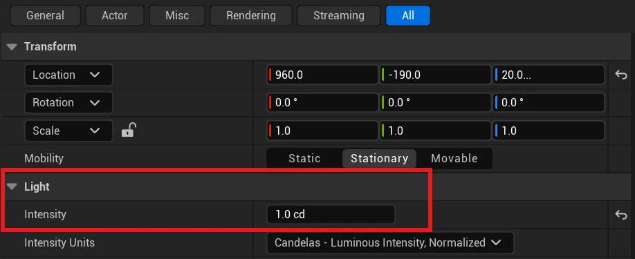
The first step: create an
Actorblueprint. Name itBP_LightOnTrigger. Add aBox Collision(see wiki) component.Hold On Tutorial 101 on the basics of creating new blueprints and adding components.
If you don’t know how to do this, refer back to
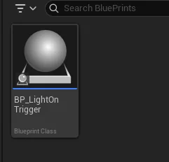
Hold On not new to Unreal, you ought to be practicing a file/folder organizational logic that makes sense to you. Be consistent so you can find your files quickly. Make a new folder named
HauntedHouse? Or add new files to the existingFirst Personfolder?Assuming you are
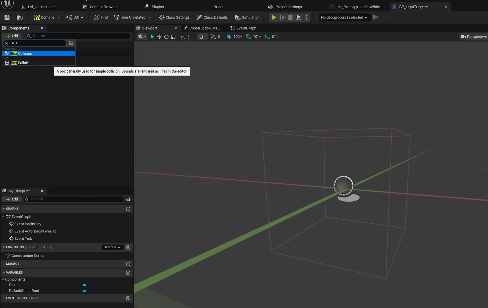
B. Create an Overlap Event
In the Event Graph, add
OnComponentBeginOverlapfrom theBox Collisioncomponent.Hold On
BP_FirstPersonCharacter— not the platforming character from earlier tutorials. You must understand what character class you chose in order to choose the correctCast Tonode.This project uses the First Person template, so the character class is
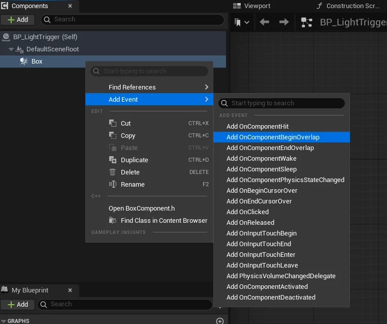
Drag from the resulting node to add
Cast to BP_FirstPersonCharacter(see Cast To).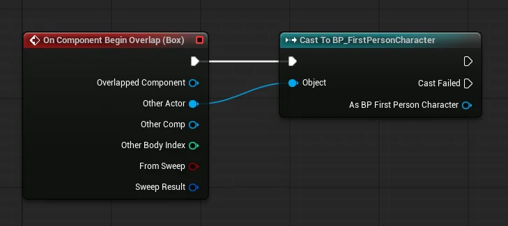
C. Create a Light Variable
Create a variable of type
Light. Name itLightsThe.Why is there a grid icon by the type
Light? Read on.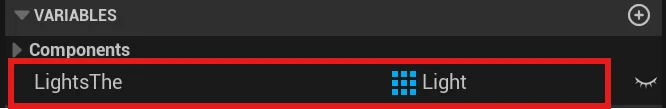
In the Details panel, change the container type to
Array.
This lets oneBP_LightOnTriggercontrol multiple lights.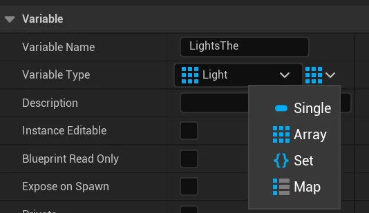
Enable
Instance EditableandExpose on Spawnso lights can be added to the array by assigning them in the level.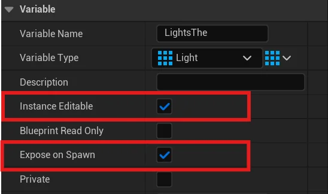
Ask your LLM why:
In the Unreal tutorial I’m following, I just changed a variable from a single item to an “Array”. Why would I use an Array instead of just creating five separate light variables?
D. Create Timeline & Lerp
D1 — Build the Timeline and For Each Loop chain
To make lights turn on gradually, we will use a
Timelinenode (Add Timeline...). Remember timelines from Tutorial 101?With the
Timelinenode selected, press F2 to rename itLightOnTM.See
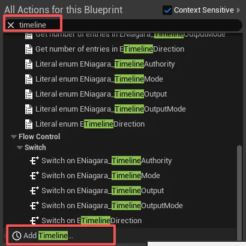
Drag from the
Cast To BP_FirstPersonCharactersuccess pin. Fix the exec wire: ensure it is connected toPlay from Start.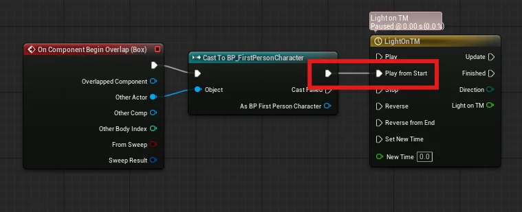
Double-click the
Timelinenode to open the editor. Create a float track namedLightOnTM. Set Length to2.0. Add a keyframe at time0.0with value0.0, and at time2.0with value1.0.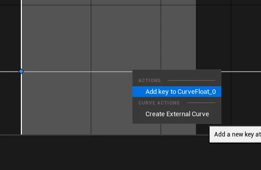
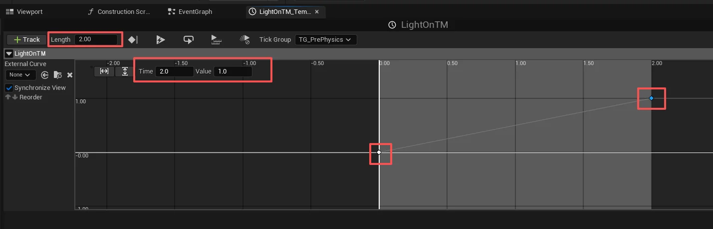
Next, back in the Event Graph, create a
Target Intensityvariable (typeFloat, but not an array). Make itInstance EditableandExpose on Spawn.What is this for?
Target Intensityis the value we want the lights to reach when the player enters the trigger.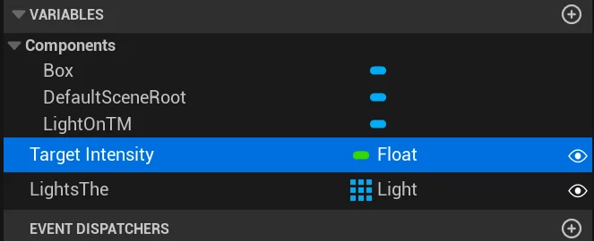
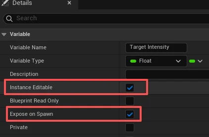
Dragging from the
Timelinepin, add aFor Each Loop. From the Variables panel, drag inLightsTheand pass it intoFor Each Loop. Drag from the loop’sArray Elementand choose theIs Validnode (the one with the?).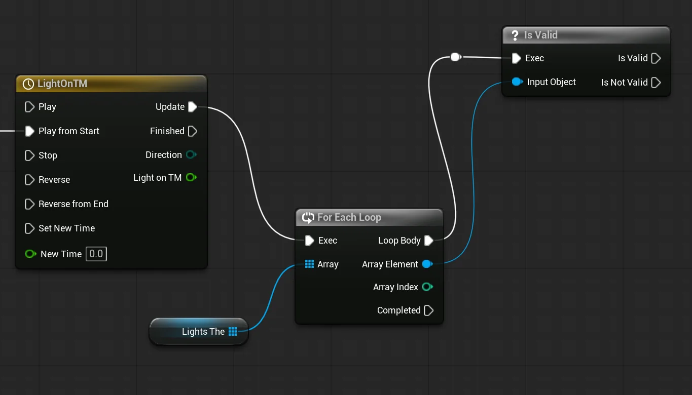
Drag an additional blue wire from the loop’s
Array Elementand search forGet Light Component.Drag from
Light Componentand search forSet Intensity.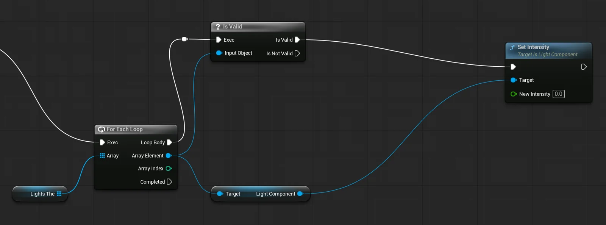
See to the left of
Set Intensity? We left space for our next steps.Compile. Save All.
D2 — Insert the Lerp and run it in the level
Drag from
Light Componentand search forGet Intensity. This node lets us access the currentIntensityparameter of each light.Insert a
Lerp (float)node betweenGet IntensityandSet Intensity. From our VARIABLES panel to the left of the Event Graph, drag the variableTarget Intensityin and choose Get.Tip
If you double-click a wire, you can add a reroute node (a dot) to clean up the graph.
Connect the float output of the
Timelineto theAlphapin of theLerp.To enlarge any image: Right-click to choose “Open image in new tab”.
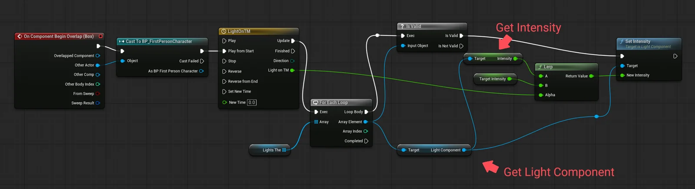
Back in the level, place an instance of
BP_LightOnTriggerclose to where the player will spawn. In its Details panel, assign multiple lights toLightsThe, and set aTarget Intensity(e.g., 10).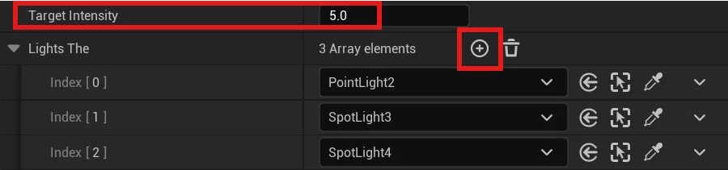
Tip
Directional Lightso the effect is easier to see.Make the lights’ color distinct or place a large cube above the area to block the
Set the
Intensityparameter of each to zero so that they start out dark before the blueprint is triggered.
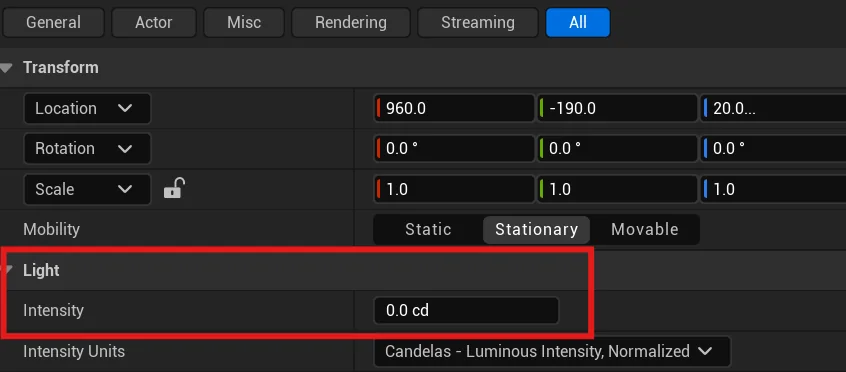
Test it. The lights should turn on gradually.
D3 — Refine to an S-curve
Let’s make the “lights on” behavior more nuanced.
Return to the
Timelinenode (LightOnTM). Double-click to edit the curve. Right-click the keys, choose User, and move the handles to create an “S-curve” for a smoother ramp-up.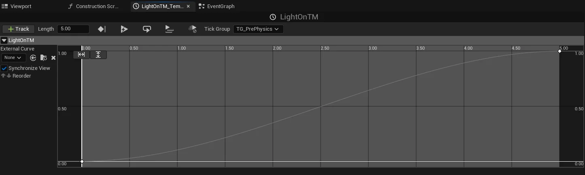
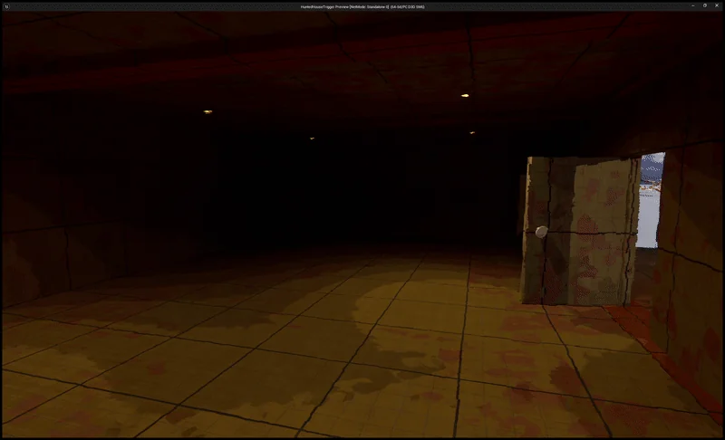
E. Organize Nodes in a Function to Make This Modular
E1 — Collapse the nodes into a function
What a level designer wants: when working, to set the lights to their desired “target” (
Target Intensity). But then on game start (BeginPlay), the lights go dark - they are set to zero by the blueprint script.Hold on
BeginPlay- you'd have a great deal of redundant code.Imagine you duplicated this script and called those duplicate nodes on
In every language, this is where functions are useful and wonderful.
Select every node after the
Timelinenode, including the array connected to the loop. (See in this screengrab which nodes have an orange selection border). Right-click and choose Collapse to Function.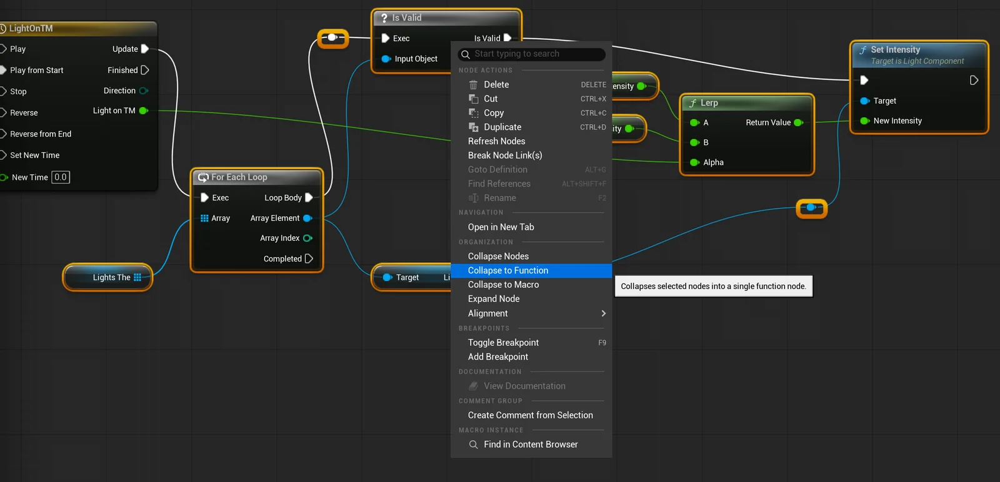
Those nodes will be replaced by a single node. Rename it
SetAllLights.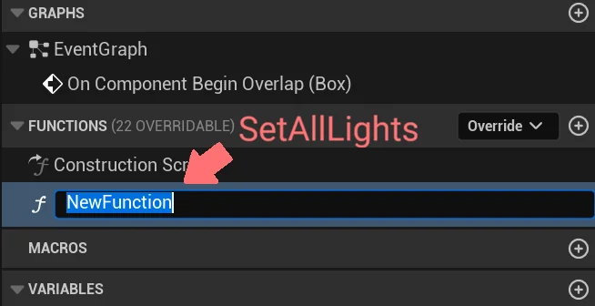
Double-click the node to open the function graph.
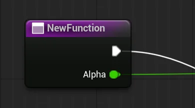
Hold on. Take a moment to look at the tabs above, the ones that organize the parts of your blueprint, such as the Event Graph and your new function.
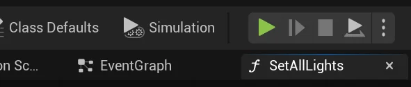
E2 — Parameterize the function
Why are we doing this?
SetAllLightswhenever we want. The player entering a trigger, exiting it, or starting the game—all can use this same code.What good is taking this script out of the Event Graph and placing it in a function? Answer: We can now call
In the
SetAllLightsfunction, select the purple node. In the Details panel, add an input namedInTargetIntensityof typeFloat. Also renameAlphatoInAlpha.(The
Inprefix communicates these are Inputs - often called Parameters).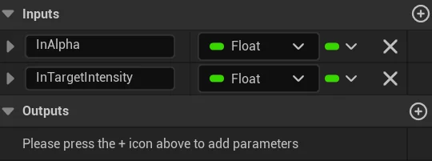
The inputs (parameters) are now passed in.
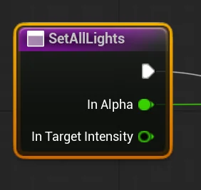
Delete the
Target Intensityvariable node from inside the function and connect theInTargetIntensityinput pin instead.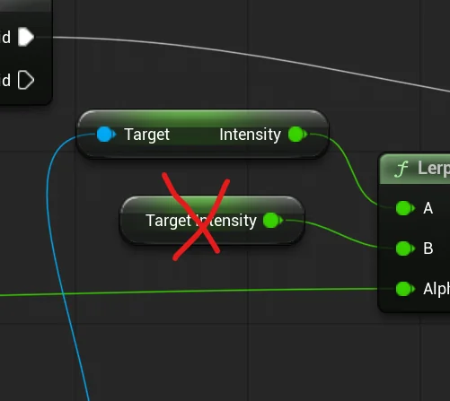
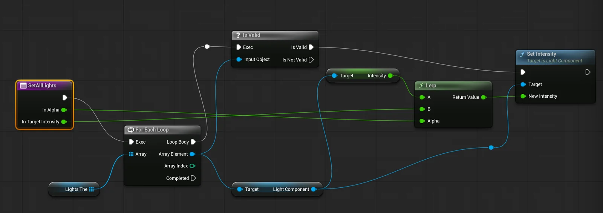
Return to the Event Graph. Drag the
Target Intensityvariable into the new function node.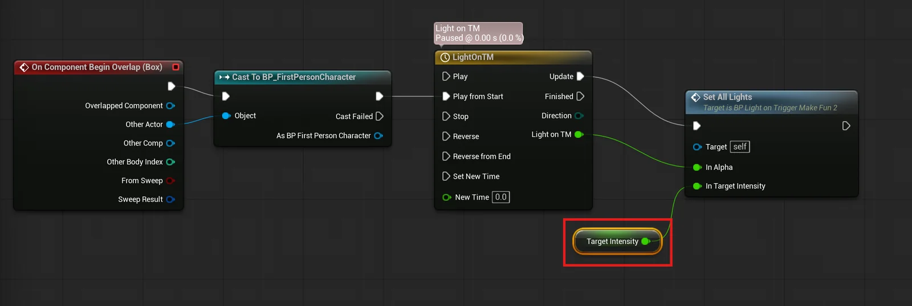
E3 — Wire to BeginPlay
Now, add an
Event BeginPlaynode to your Event Graph. CallSetAllLightsand setInTargetIntensityto0.0andInAlphato1.0.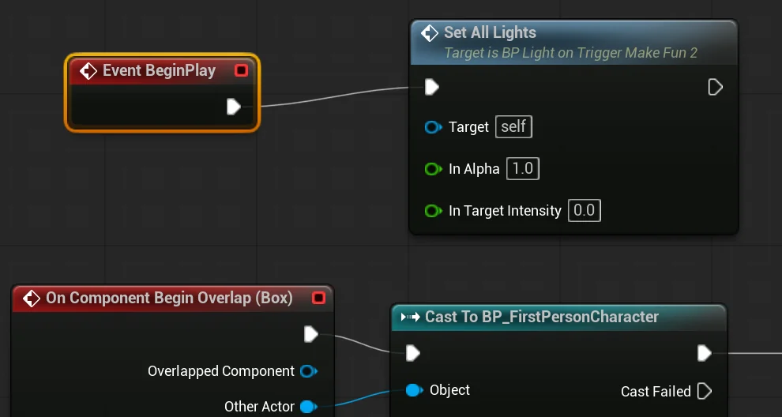
Play the project. The lights should be dark at start, then brighten when you enter the trigger.
For the future
bHasTriggered) to ensure certain events only fire once.Consider incorporating a boolean variable (e.g.,
F. Stagger the Lights
Final extension for lights and triggers. Right now every light fades in at the same time when the player enters the trigger. Let’s make them turn on one after another — i.e. light 1 immediately, light 2 a second later, light 3 a second after that. Be warned. We will sacrifice functionality: the lights will indeed stagger, but will not fade up from zero.
First instinct might be to add a Delay node — and why it fails
Open
SetAllLights. Try to drag off the For Each Loop and add aDelaynode. It won’t appear, even with context-sensitive turned off.Hold On — why?
Delayis a latent node — its execution spans multiple frames. Functions in Blueprints do not allow latent nodes.Even if we worked around that by leaving everything in the Event Graph and just dropping a
Delayinside a For Each Loop there, it still would have issues. AFor Each Loopis synchronous — it expects to run all iterations in the same frame.So we need two things:
- Get out of the loop. Replace it with a Custom Event that calls itself with an incremented Index. This pattern is called recursion.
- Extract a small function —
SetOneLight— that handles “turn one light on.” The Event Graph will orchestrate the timing and we will remove both the Timeline node andSetAllLightsfrom theOnComponentBeginOverlaplogic.This is the foundational division of labor in Blueprint: Functions for discrete operations, Event Graph for time-based orchestration.
F1 — Make a SetOneLight function
In the My Blueprint panel, click the
+next to Functions. Name itSetOneLight.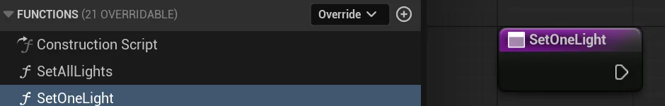
Inside the function, select the purple entry node. In the Details panel, add two inputs:
- Name:
InLight, Type:Light(single — not an array)- Name:
InIntensity, Type:Float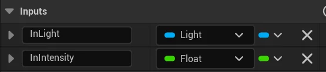
Let’s build the function.
First, drag from the entry node’s exec pin and search for
?Is Valid(specifially, the question-mark node). Connect the entry node’sInLightto?Is Valid’sInput Object.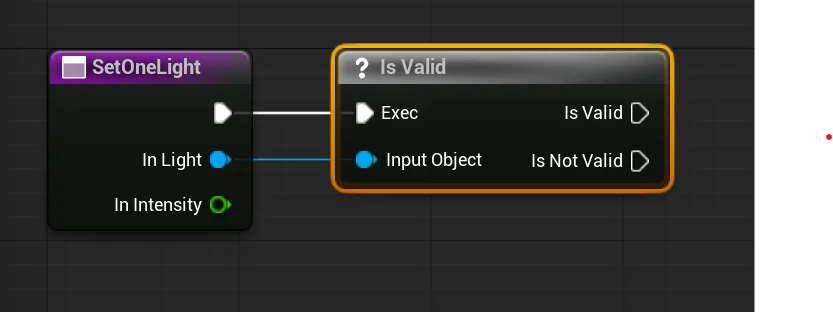
- From the entry node, drag from
InLight(again) and typeLight Componentin order to findGet Light Component.- Drag from
Light Componentto addSet Intensity. Connect the inputInIntensityto the New Intensity pin of theSet Intensitynode.- Don’t forget to connect the exec pins.
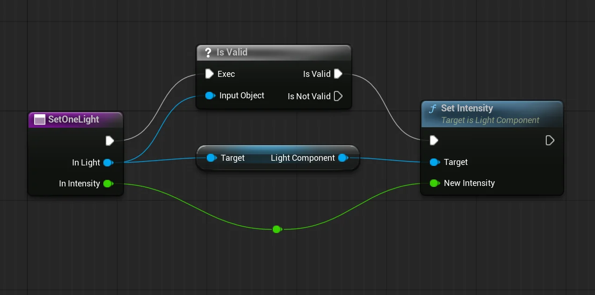
Compile. Save All.
F2 — Create the LightOnSequence Custom Event
Back in the Event Graph, right-click in empty space and choose Add Custom Event…. Name it
LightOnSequence.Select the new event node. In the Details panel, click
+next to Inputs:
- Name:
InIndex, Type:Integer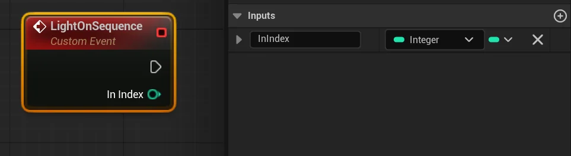
F3 — Bounds check
Stop the recursion when we run out of lights:
- Drag in the variable,
LightsThe(Get). Drag off it and search and addLength.- Drag from
LightOnSequence’sInIndexoutput in order to add<(Less). ConnectLengthto the second input of the Less node.- Drag from
LightOnSequence’s exec pin and addBranch. Wire (red) the Less node’s boolean output to the Branch’s Condition pin.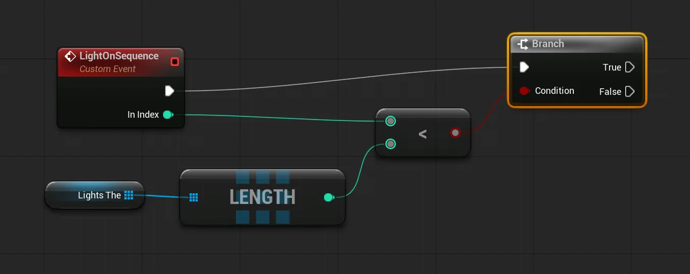
F4 — On True, fetch the current light and call SetOneLight
- Once again, drag in the variable
LightsThe(Get). Drag from it to addGet (a copy). ConnectInIndexto the Get node’s index pin.- From the Branch’s True exec drag to add our function,
SetOneLight.- Back to the first (red) node,
LightOnSequence- wireInIndextoGet (a copy).- Drag from
Get (a copy)toSetOneLight’sInLight.- Drag in the variable
Target Intensity(Get) and connect it toInIntensity.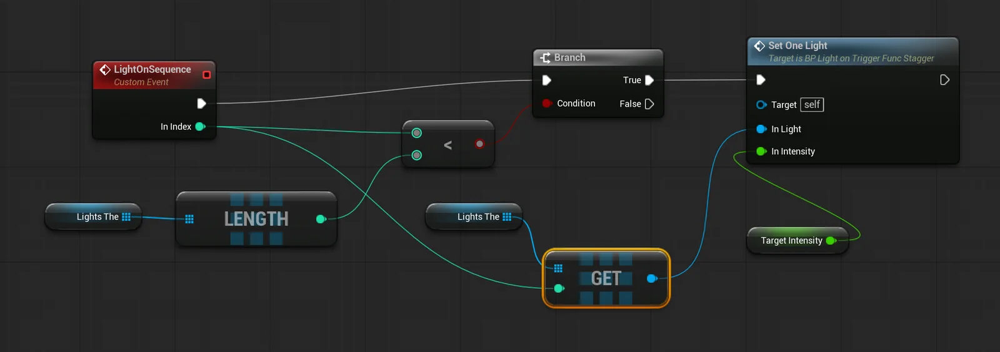
F5 — Delay, then call yourself with
Index + 1
- From
SetOneLight’s exec out → drag →Delay. Set Duration to1.0(your one-second gap between lights).- From the Delay’s
Completedpin → drag → searchLightOnSequence. (Yes, your own event appears — that’s the recursion.)- Drag from
LightOnSequence(the blue node we just created) drag fromInIndex→ search+(under Operators to findAdd). Type1in the second pin.- And for the first pin of this
Addnode - look all the way from the redLightOnSequencenode at the beginning of this script…and drag itsInIndexto the first pin of theAddnode.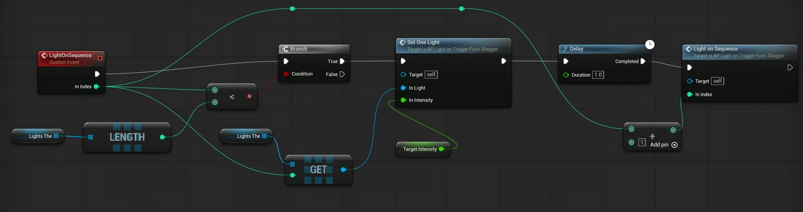
The Branch’s False pin and the recursion-end happen automatically: when
InIndexreachesLength, the Branch condition is false, the False pin fires (connected to nothing), and the chain stops.F6 — Wire it up at the overlap
Find your
OnComponentBeginOverlap→Cast To BP_FirstPersonCharacterscript, the script created in Steps 2D and 2E.
- Remove what currently runs after the cast success pin - the timeline and the
SetAllLightscall.- (Yes - we’re removing the timeline, therefore the lights will come on instantly, when it is their turn).
- From the
Cast To BP_FirstPersonCharacter→ callLightOnSequence, connecting this to the script we’ve worked on above.- Ensure
0is the value in the newLightOnSequence’sInIndexinput.Keep
SetAllLights(0.0, 1.0)onBeginPlay— that’s still the right call to start the level dark. The stagger logic is a separate path.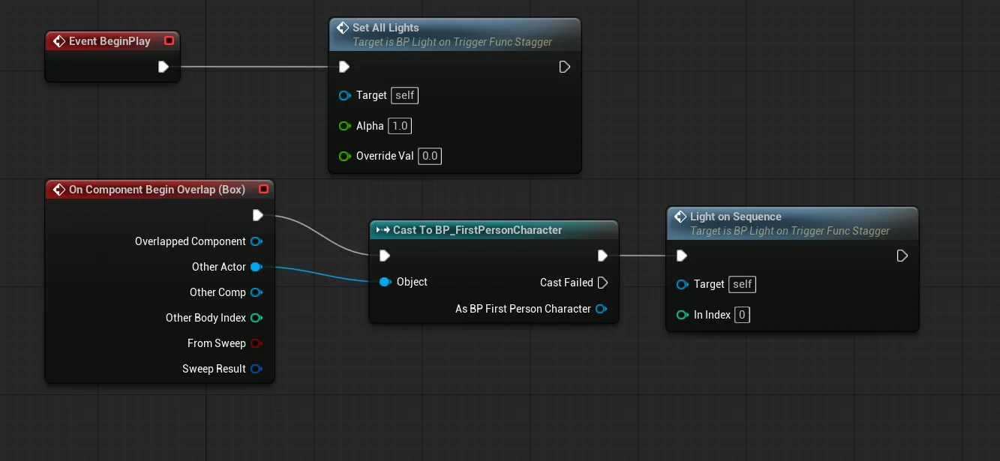
F7 — Test
Compile. Save All. Press play and walk into the trigger. The lights should pop on one at a time, one second apart.
For the future
SetOneLightis a Function — discrete, fast, reusable, no time involved.LightOnSequenceis a Custom Event in the Event Graph — it orchestrates when things happen usingDelayand recursion.Notice the division of labor we ended up with:
Tip
SetOneLight. That requires either one Timeline per light (impractical) or driving the fade withSetTimerByEventor aTick-based interpolation. We will not do this here.Do you miss the behavior where each light to faded in (not snap on)? To be coupled with the staggered behavior? You’d need to call your Timeline-driven fade per light instead of
3. Door Trigger Blueprint (Rotate)
When the player enters a doorway, the door swings open.
A. Create a Door Trigger Box
Create an
Actorblueprint. Name itBP_DoorTrigger. Add aBox Collisioncomponent.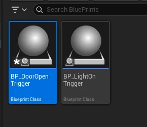
B. Create an Overlap Event
In the Event Graph, add
OnComponentBeginOverlap.Cast to BP_FirstPersonCharacter.


C. Create a Door Mesh
Add a
Static Meshcomponent and rename itPivot. Add aCubecomponent and scale it like a door panel. Rename itPaneland move it so one edge is centered withPivot.Hierarchy:
Pivotshould be the parent ofPanel. Add a doorknob (cylinder) if you like.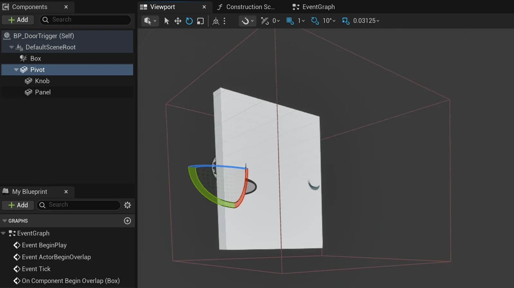
D. Create Timeline & Lerp
Create a
Timelinenode by searching forAdd Timeline...Name itDoorOpenTM. Connect theCast To BP_FirstPersonCharacterexecution pin toPlay from Start.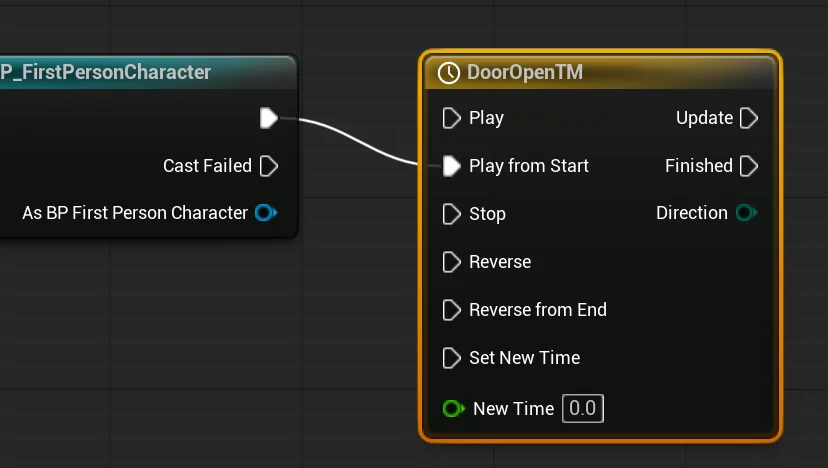
Double-click
DoorOpenTMto edit.Set the
TimelineLength to3.0.Add a float track named
Relative Rotation.See the button named
Trackwith the green plus icon - click toAdd Float Track.Add two keyframes like you see below.
The first keyframe is at time 0 and value 0. The second is at time 3 and value 1.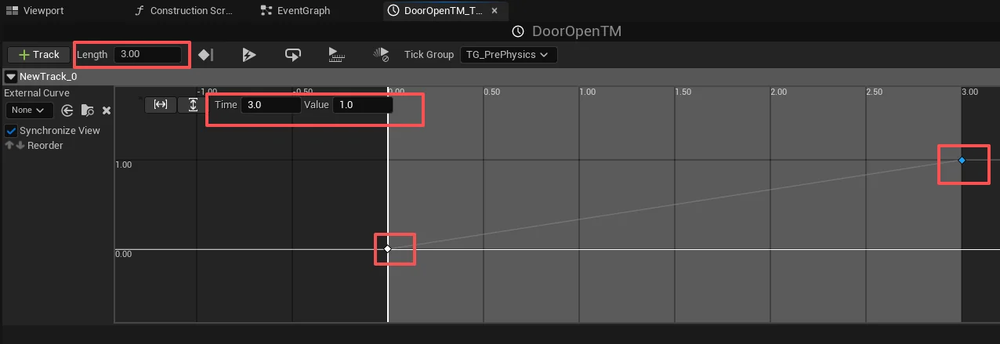
Back in the Event Graph, to the right of the Timeline node - drag the
Pivotcomponent (in the Components panel) in. It will make aPivotnode.Drag from
Pivotand search forGet Relative Rotation. Right-click the right side of that new node and chooseSplit Struct Pin. (Don’t worry, these are not yet to be wired to the Timeline node).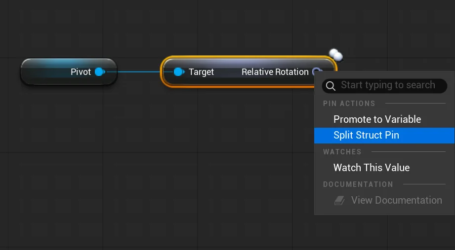
The
Split Struct Pinbreaks the rotation values into three discrete floats.Drag from
Relative Rotation Z (Yaw)and addLerp(under theFloatcategory).
On the left, find VARIABLES. Add a
FloatnamedTarget Rotation. (We will initialize it soon). Like we’ve done elsewhere, set totrueforInstance EditiableandExpose on Spawn.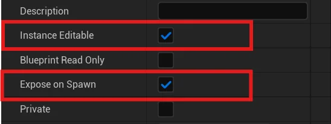
Now drag in
Target Rotation; choose Get, and wire that toLerplike this.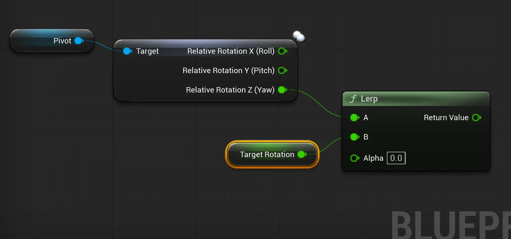
Back to the Timeline node -
DoorOpenTM. Drag from itsUpdatepin in order to add the nodeSet Relative Rotation (Pivot). The two created nodes - move them far to the right. See below.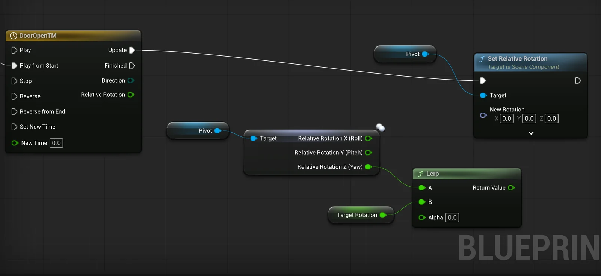
Right-click
Set Relative Rotation’sNew Rotationand chooseSplit Struct.Ask your LLM why
In the Unreal tutorial I’m following, I’m using “Split Struct Pin” on a Rotation value. Why is it often better to split a pin into X, Y, and Z instead of just plugging in a single Rotation wire?
Wire
Lerp’s return value toSet Relative Rotation’sNew Rotation Z (Yaw). This blueprint script is complete.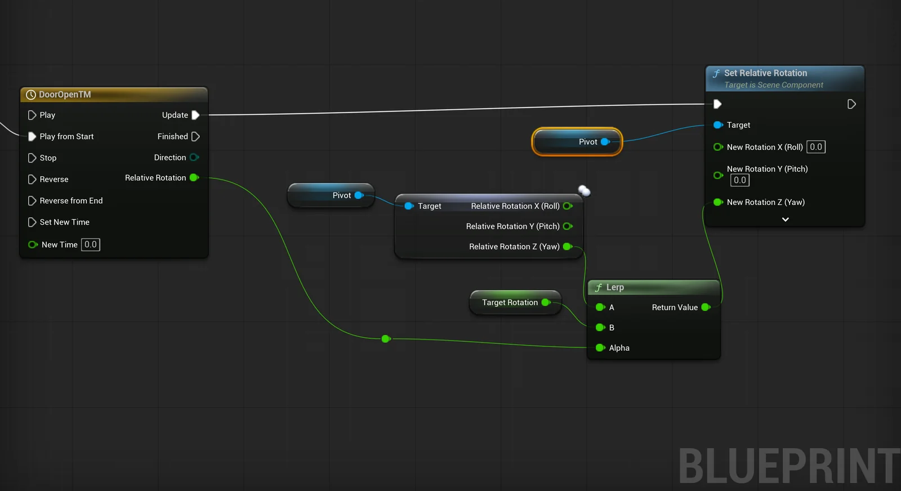
Time to try it out. From the Content Browser, drag your blueprint into your level.
Find
Target Rotationin the Details panel.
Set it to 90. This will cause the door to rotate from 0 to 90.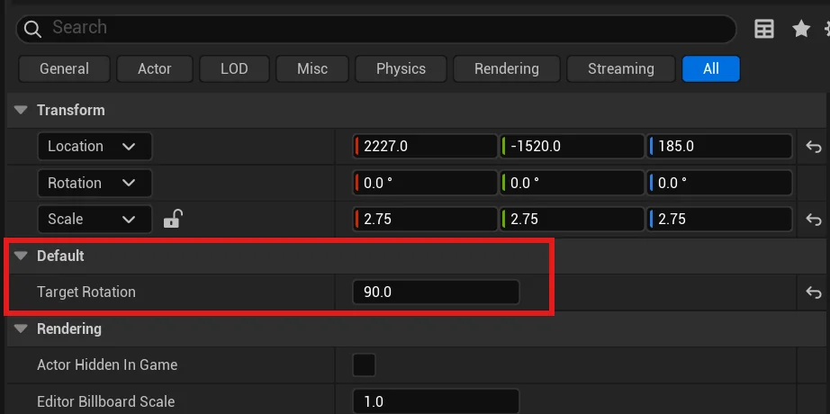
Play and test.
Save All
4. Animation Trigger Blueprint (NPC)
When the player enters a space, a Mixamo character plays an attack animation.
A. Import NPC Character Assets
Go to Mixamo. Find a character and an Idle animation. Download with skin (.fbx).
Find a second animation (e.g., Attack) and download it Without Skin.
Import these into a
Mixamofolder in Unreal.
B. Create an NPC Blueprint
Create a Blueprint Class. Choose
Characteras the parent class. Name itBP_Zombie.In the Viewport, assign your Mixamo skeletal mesh to the
Meshcomponent.
Change the Animation Mode to
Use Animation Assetand select your Idle animation.Place
BP_Zombiein the level and test that it plays the idle animation.
C. Create a Play Animation Event
In the
BP_ZombieEvent Graph, add aCustom EventnamedAttack. Drag theMeshcomponent in. Drag off it and search forPlay Animation.
Right-click the
New Anim to Playpin and choose Promote to Variable. Name itAttackAnim.
Use a
Delaynode (set to the length of the animation) and then callPlay Animationagain with the Idle animation set toLooping.
D. Create an Animation Trigger Box
Create a new
Actorblueprint namedBP_ZombieTrigger. AddBox CollisionandOnComponentBeginOverlap.Cast to BP_FirstPersonCharacter.
Create a variable of type
BP_ZombienamedZombie. Make itInstance Editable.
Drag the
Zombievariable in, then call the custom eventAttack.
E. Setup in the Level
Place the trigger box in the level. In its Details panel, assign the
Zombievariable to yourBP_Zombieactor instance.
Save All
5. Sound Trigger Blueprint
When the player enters a trigger, ambient sound fades in.
A. Create a Sound Trigger Box
Standard pattern:
Box Collision,OnComponentBeginOverlap,Cast to BP_FirstPersonCharacter.
B. Create a Sound Variable
Create a variable named
Ambient Soundof typeAmbient Sound. Make itInstance Editable.
Drag
Ambient Soundin. Drag off it and search forGet Audio Component, then callPlay.
C. Insert an Ambient Sound in the Level
Add an
Ambient Soundactor to the level.Enable Spatialization. Adjust
Inner RadiusandFalloff Distance. Set Auto Activate tofalse.
Import a
.wavfile and assign it to the actor.
D. Setup the Trigger Box
In the level, select your
BP_SoundTriggerand assign theAmbient Soundactor to the variable.Save All
What you can now build
- Lights that turn on when the player enters a room — all at once, or in a staggered sequence (one by one)
- A door that swings open on its hinge (rotation-based animation, not just sliding)
- An NPC character imported from Mixamo that reacts to the player’s proximity with a triggered animation
- Spatial ambient sound that activates when the player enters a zone, with falloff distance and spatialization
- A single trigger that controls multiple objects at once (an array of lights, sounds, or actors)
- Reusable blueprint functions — the same logic callable from BeginPlay, overlap events, or anywhere else
- A layered atmospheric space: lights, rotating doors, animated characters, and sound all responding to player movement
Example deviations you are ready for
- One trigger fires multiple events - sound, lights on, actor transformations
- Events on exiting a trigger - lights turn off, for example